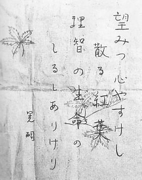

山崎明と三島由紀夫の祥月命日。
今日は、祥月命日だ。
例年より遥かに薄まった症状しかなかったけれど、やっぱりなんとなくそわそわしていて、ハラハラしていて、生存の為にやらなくてはいけないことに失敗しているような気分だった。私は部屋で手洗いの洗濯をやっていた。なぜか一日誤解していて、まだ23日から24日までのはざまにいるんだと考えていた。ちゃんと、病院から処方された薬を飲んだ。
やっぱり多少はハラハラしていた。繰り返すようだけれど例年より遥かにマシだったと思った。
それでも自分が何もかも間違えた様な気分にはならされていた。
自衛隊の駐屯地で三島由紀夫が万歳を叫んで切腹した日であり、山崎晃嗣が服毒して亡くなった日でもある、この日だ。明さんは24日の23時過ぎに計画的に25日目掛けて服毒した。
今年も私は死ななかった。
画像は、当時東大生で法学部だった山崎晃嗣が、11月24日23時台に青酸カリを服毒した時に残した辞世の句。紅葉に人の命をなぞらえている。光クラブ事件、と呼ばれている。
 ← Back to Blog
明さんの父親や男兄弟達はみんな医者だった。お医者さんに助けられたことは届かなかった家族の手が届いた様な気分がした。医療…医療者に助けられた。
運命が巡って行く。スカンジナビアに行ったのも実は勘だった。この事もちゃんと纏めて書いてしまおう、このブログに。